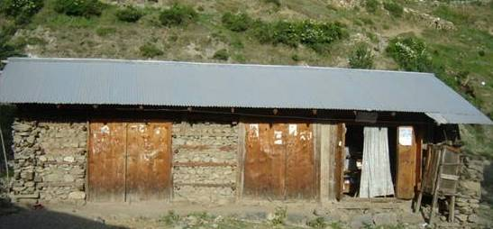
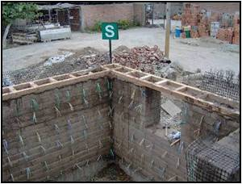
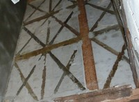
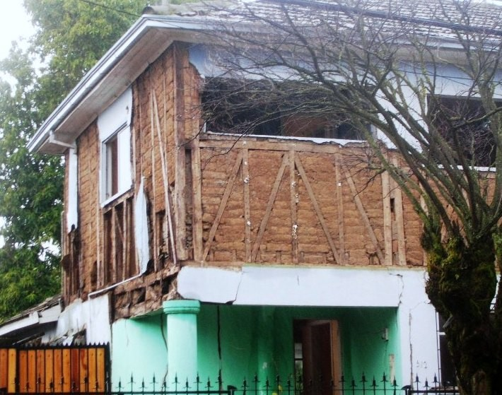
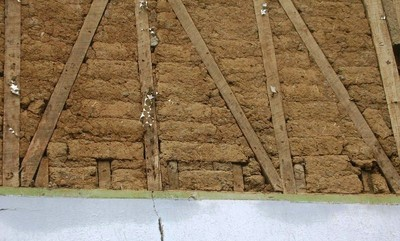

Refuerzado con madera [RW]
Muros de mampostería que son reforzados ante fuerzas sísmicas mediante miembros horizontales, verticales, y/o diagonales de madera. El refuerzo de madera puede consistir de vigas de enlace de madera a nivel de alero para unir muros o pueden ser postes verticales unidos a los muros para reducir la cantidad de daño por terremotos.

Mampostería de piedra sin tallar en morter de barro con bandas de madera (nombre local: Bhatar), NWFP, Pakistán (J. Bothara)

Edificio de acero con enlaces de vigas de madera a nivel de alero, Perú (M. Blondet)

Construcción Dhajji Dewari en Kashmir, India (D. Rai)


Edificios "Pombalino" en Lisboa, Portugal son edificios históricos de mampostería con elementos de arriostramiento de madera; estos edificios fueron construidos luego del terremoto devastador de 1775 (refiérase a World Housing Encyclopedia Report 92 para mayor información)




Edificios de adobe reforzados con madera pueden encontrarse en Chile (tabiquería de madera rellena de adobe). La foto superior muestra un edificio en Santiago (note la porción del muro expuesto); las fotos inferiores muestran edificios en Cauquenes dañado por el terremoto de 2010 Maule (S. Brzev and M. Astroza)

Edificio de mampostería de piedra reforzado con madera, Algeria (M. Farsi)